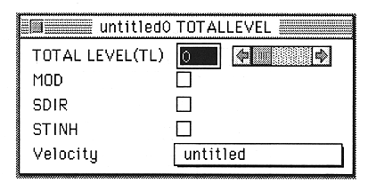
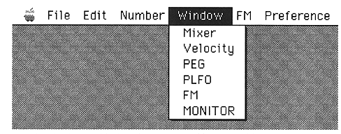
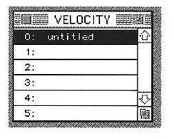

Return to previous page ｜ Return to menu ｜ Go to next page
-
Now it ’s the last setting. Double-click the TOTAL LEVEL location in the Slot window. The TOTAL LEVEL window will appear.

I select Velocity here from the pop-up menu, but I haven't set Velocity yet.
5 Set Velocity
Let's set
Velocity. Close the TOTALLEVEL window once.
Select Velocity from the Window menu.

The Velocity window will appear.

If you look at this screen, you already know. You can enter a name by double-clicking the name, and double-clicking the number next to the name will display the VelocityEdit window.
Return to previous page ｜ Return to menu ｜ Go to next page